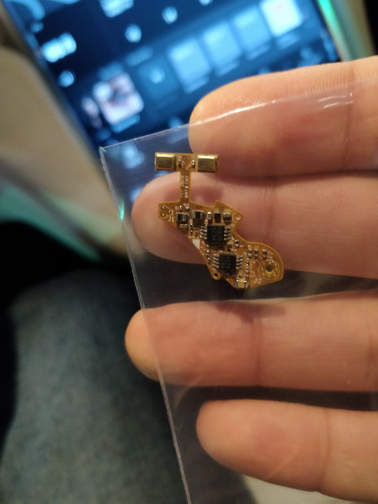
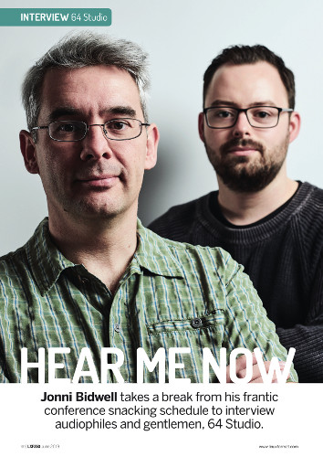
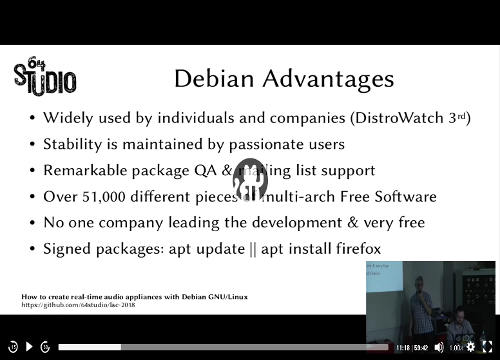

Open source hardware and software for media
64 Studio Ltd. produces, integrates and documents open source hardware and software for media. We develop bespoke GNU/Linux distributions for our partners, package their applications for automated installation, and design embedded system hardware.
New OpenMHA earpieces from Bat and Cat Corporation
Bat and Cat earpiece circuit board
Bat and Cat Sound Labs of Palo Alto, USA has created earpieces for the open hardware Cape4All multichannel soundcard. These earpieces will be used in a wearable device for hearing aid field trials. You can see a preview of the complete hardware system on the 64 Studio YouTube channel.
64 Studio interview in Linux Format magazine
Thanks to Jonni Bidwell of Linux Format magazine for profiling our work in issue 250! A PDF of the interview is available, reproduced with permission from www.linuxformat.com.
Ultra-low I2S audio latency on ARM
The I2S format used in the circuit board of your vintage CD player is proving very interesting as a peripheral interface for full-duplex, multi-channel audio boards on ARM devices. At the request of the openMHA community we have developed a hearing aid research distribution codenamed 'Mahalia' for the BeagleBone Black, with the lowest audio latency figures we've seen on any GNU/Linux device. Please see our presentation at Embedded Linux Conference Europe below, and the openMHA presentation video from the Linux Audio Conference for the details.
OpenMHA featured in MagPi magazine

The official magazine of the Raspberry Pi Foundation has featured the OpenMHA hearing aid research project in issue 67. You can download a free PDF of issue 67 courtesy of MagPi.
Wondering how we do it?
Find out how to build the software for GNU/Linux audio appliances and why we recommend Debian in this tutorial video.
Contact
Please email Daniel James ‹daniel@64studio.com› for all enquiries.
Our postal address is 63 School Green Road, Freshwater, Isle of Wight, PO40 9AT, Great Britain.